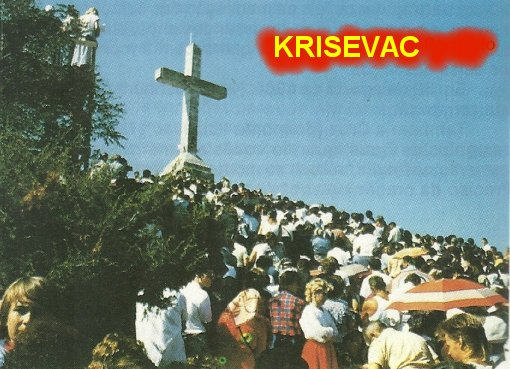
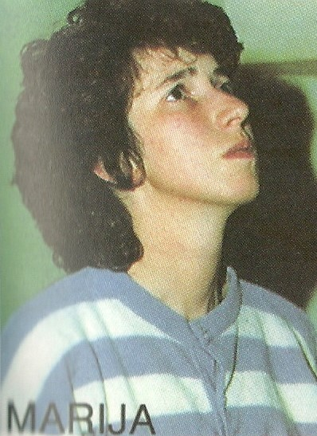
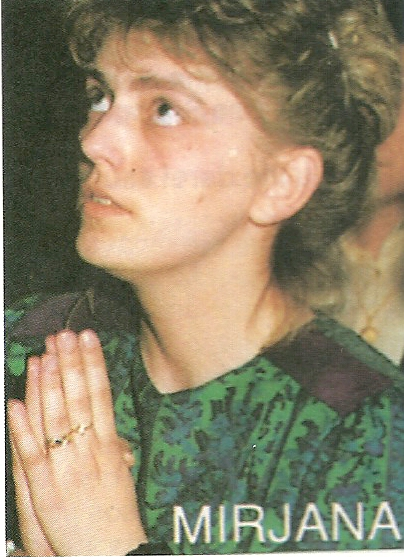

AS APARIÇÕES CONTINUAM
QUINTA APARIÇÃO
O dia 28 de
Junho de 1981 foi um domingo maravilhoso, completamente ensolarado e sem nenhuma
nuvem 
No entardecer deste dia, uma multidão de pessoas calculadas em cerca de 15.000, já se encontrava em Mediugórie, prontas e na expectativa de ver os jovens receberem o sinal luminoso para subir a Colina das Aparições. Depois das 18 horas, ainda estava claro, quando auxiliados por diversas pessoas, abrindo caminho entre a multidão, os jovens foram ao encontro da MÃE DE DEUS. Às 18h30m NOSSA SENHORA apareceu e os jovens pediram às pessoas que se ajoelhassem.
Os videntes perguntaram por que ELA não aparecia na Igreja, para todos verem? ELA respondeu:
- “Benditos aqueles que embora não vendo, acreditam sinceramente”.
Depois os jovens lhe perguntaram se preferia que eles rezassem ou cantassem? ELA respondeu:
- “Os dois, quero ouvi-los cantar e rezar”.
Em seguida, eles perguntaram o que ELA desejava daquelas pessoas ali reunidas? A VIRGEM respondeu:
- “Que elas acreditem verdadeiramente como se tivessem visto. Rezem sempre e confiem em DEUS”.
Despedindo-se dos jovens com um aceno de mão, deixou atrás DELA um perceptível sinal luminoso, ao mesmo tempo em que juntos, os videntes e o povo cantaram: “MARIA, MARIA, como sois bela”.
Logo após o final da Aparição, o Padre Zrinko Cuvalo, submeteu os jovens a uma minuciosa interrogação com o objetivo de testar a autenticidade das Aparições. Não houve nenhuma dúvida e nem contradições, as respostas dos jovens, que estavam separados, foram perfeitas e iguais. O Padre ficou completamente convencido da realidade dos fatos, e da verdadeira presença da MÃE DE DEUS em Mediugórie.
SEXTA APARIÇÃO
Dia 29 de Junho, Festa de São Pedro e São Paulo. Quando os jovens se preparavam para ir à Santa Missa, apareceu uma Ambulância e um carro de Citluk, que conduziram eles e os seus pais para exames numa Clinica Psiquiátrica em Mostar. A médica que os examinou, conforme ordem e recomendação da Administração Central, inicialmente com cara de poucos amigos no primeiro momento do contato com os jovens, os acusavam chamando-os de drogados e de estarem enganando as pessoas. Acontece que ao longo dos exames, o comportamento educado e obediente dos videntes, fez a médica começar a pensar e a raciocinar diante do que presenciava. E assim, como parte dos exames os jovens foram levados ao necrotério para amedrontá-los. Eles permaneceram modestamente sérios e acatados. A médica chefe do setor, que a tudo observava, falou para os jovens:
- “Loucos são aqueles que os trouxeram aqui. Vocês são perfeitamente normais”.
Os jovens e seus pais alugaram dois táxis e voltaram imediatamente a Mediugórie, chegando à tardinha. Com esforço e a natural correria para não faltar ao encontro com a MÃE DE DEUS, atravessaram a multidão que subia a Colina das Aparições e se localizaram num local, devidamente separado. E logo em seguida, convidaram o povo a rezar o Pai-Nosso, Ave-Maria, Glória e a cantar. Quando NOSSA SENHORA apareceu todos se ajoelharam. Ela estava alegre e sorria. Os jovens, cheios de felicidade por desfrutarem de tão especial e magnífica visita, perguntaram:
- “Por quanto tempo ELA viria ainda encontrá-los”?
A VIRGEM respondeu:
- “Por todo o tempo que desejarem”.
Os jovens contaram a respeito da perseguição que estavam sofrendo, inclusive as ameaças feitas pelos policiais e principalmente pelas autoridades do Governo Comunista. E completaram as informações dizendo que não tiveram medo de nada, que estavam dispostos a ser presos ou até morrer, do que negar a verdade da presença DELA. Disseram ainda, que os chefes e comandantes do Governo afirmavam e queriam fazê-los acreditar que existiam os deuses, mas, eles estavam preocupados com o mundo e não com aquelas simples crianças. A VIRGEM respondeu:
- “Há somente Um DEUS e uma fé, creiam nisto com firmeza... Tenham uma fé sólida e confiem em MIM”.
Na continuidade da conversa, os videntes carinhosamente suplicaram a NOSSA SENHORA que curasse o pequeno Daniel. Ele tinha menos de 3 anos de idade e era vítima de uma espécie de paralisia infantil. ELA disse:
- “Que os pais da criança creiam firmemente na bondade de DEUS, e ela será curada”.
A criança foi curada mais tarde, naquela mesma noite.
NOSSA SENHORA SE despediu das crianças, da mesma maneira atenciosa que das outras vezes.
SÉTIMA APARIÇÃO
Era o dia 30 de
Junho. Duas Assistentes Sociais de Citluk, contratadas pelo Governo Comunista, e
portanto, 
- “Se não pararem, vamos pular”.
Elas, então, pararam, e os jovens saíram do carro e se afastaram um pouco da estrada e começaram a rezar. Dali eles podiam ver a Colina das Aparições e a multidão que já estava formada. Logo viram uma nuvem luminosa por cima das pessoas e entenderam que era a MÃE DE DEUS. A VIRGEM dirigiu-se para eles, flutuando no ar. Com o vento, Suas vestes chegavam a ondular. Era magnífico observar aquela cena. ELA chegou perto deles, ali na estrada, e juntos rezaram sete Pai-Nosso, sete Ave-Maria e sete Glórias. Nesse dia, a pedido de Mirjana, NOSSA SENHORA concordou em aparecer na Igreja. Falou um pouco com os jovens, estimulando a fé das crianças e a necessária fidelidade a DEUS, e depois SE despediu, rumando em direção ao Monte onde estavam muitas pessoas e de lá, elevou-se aos Céus.
Depois da Aparição, as duas Agentes do Governo disseram ter visto uma espécie de luz ou como se fosse uma nuvem luminosa ao lado das crianças. E os jovens lhe disseram:
-“A VIRGEM MARIA estava aqui rezando conosco”.
Elas ficaram constrangidas e sem assunto, não sabendo o que falar. Os jovens agradeceram a carona e voltaram a pé para Mediugórie. As duas moças desapareceram daquela região. Segundo informações de pessoas que as conheciam, elas pediram demissão do cargo no Governo e, uma foi para Saraievo e a outra para a Alemanha.
Ivan, que não foi ao passeio com os demais, teve medo de subir sozinho o Monte Podbrdo, onde a multidão os esperava, mas aproximou-se da base da Colina e humildemente ajoelhou e começou a rezar. A VIRGEM MARIA sempre carinhosa lhe apareceu e o abençoou.
Os jovens, voltando a pé para o povoado, desolados por deixar o povo sozinho na Colina das Aparições, também não quiseram subir o Podbrdo, foram para a casa paroquial e se encontraram com o Padre Iozo, a quem contaram tudo. Depois voltaram para casa, pois seus pais já estavam muito preocupados.
Já era tarde da noite, quando souberam que a polícia tinha levado Marinko, que além de vizinho, era um excelente companheiro e os ajudava a manter a ordem e protegê-los durante as Aparições. Ele foi levado para o Ministério do Interior em Citluk. Embora fosse tarde da noite, os videntes corajosamente tomaram um táxi e foi procurá-lo para libertá-lo de “qualquer jeito” , mas não o encontraram. E para completar, a segurança do Ministério ameaçou severamente os jovens. Tristes e desolados, voltaram para casa lá pelas duas horas da manhã. Marinko só foi liberado quando o dia já tinha amanhecido e eram quase 9 horas da manhã quando ele chegou a Mediugórie.
OITAVA APARIÇÃO
Ainda nesta manhã do dia 1º de Julho de 1981, os videntes, juntamente com os seus pais, foram convocados pelos chefões do Ministério do Interior, para uma reunião na Escola local do povoado. E lá, os comunistas esbanjaram autoridade, inclusive com firmes ameaças de expulsá-los da Escola, e até de encarcerá-los em Citluk, se eles voltassem a subir o Podbrdo, a Colina das Aparições. Os argumentos de ataque dos “vermelhos” , é que “os jovens estavam enganando o povo e que na continuidade, iam correr uma cestinha colhendo donativos para eles”. E assim, com trapaças, mentiras, ameaças e invenções, retiveram os jovens e seus pais durante quase duas longas horas, quando os liberaram.
Depois do meio dia, funcionários da Prefeitura Comunista vieram outra vez, buscar as crianças para interrogatório, com a promessa de levá-las à Igreja. Conseguiram levar Vicka, Ivanka e Marija Pavlovic. Tentaram levar Jacov, mas sua mãe conseguiu escondê-lo. Ivan e Mirjana não foram encontrados, pois já estavam num precioso esconderijo que conseguiram arranjar. E assim, somente com as três jovens, os funcionários partiram para Citluk e nem pararam no Templo Cristão. Mas as jovens reagiram firme, gritando e dando murros no carro, e com tanta violência e decisão, que eles decidiram parar a viatura perto dos Correios, para pedir calma aos jovens. Mas, como elas começaram a reclamar em voz elevada, as conduziram de volta às suas casas. Ainda dentro da viatura, as três começaram a rezar e NOSSA SENHORA lhes apareceu e lhes disse que não tivessem medo. Naquele momento da Aparição, elas ficaram tão extasiadas, que não sabiam se o carro estava parado ou em movimento, por que quando a VIRGEM MARIA estava com os videntes, tudo em volta desaparecia. Os guardas e funcionários da Prefeitura observando que “coisas” fora do normal estavam acontecendo, trataram as jovens como feiticeiras. Por fim, as meninas abandonaram o carro e fugiram para lados diferentes, desaparecendo da visão dos funcionários municipais, que não puderam perceber para onde elas tinham ido.
Mais tarde, neste mesmo dia, outros funcionários do Governo chegaram para colocar um fim naquelas concentrações e acabar de uma vez com as Aparições. O lugarejo ficou cheio de policiais e pessoas estranhas. Como era dia, procuraram as crianças para prendê-las. Souberam que estavam trabalhando na roça, nas plantações de tabaco e nas videiras. Mas uma irmã de Marija Pavlovic correu até o campo e avisou-as para se esconderem da polícia. Elas fugiram em direção a Igreja. O Templo estava fechado. O Padre Iozo estava lá dentro rezando o Breviário. Em oração, o Padre ouviu uma voz que lhe disse: “Saia e proteja as crianças”. Imediatamente ele abriu a porta da Igreja e viu as crianças correndo na sua direção, fugindo da polícia. Elas diziam: “A polícia nos persegue, esconda-nos”. E chorando suplicavam a proteção do Padre. Padre Iozo as abraçou e as levou para a biblioteca da casa paroquial, trancando-as lá dentro. Logo depois chegaram os policiais correndo e lhe perguntaram: “Viu as crianças”? Ele respondeu que sim, mas não disse onde estavam. Os policiais pensaram que as crianças tinham passado por ali e por isso, sem mais conversa, seguiram correndo em direção a Bijakovici, a fim de prendê-las.
Passado o perigo, o Padre foi conversar com os jovens e ficou sabendo dos acontecimentos, e por isso, pediu-lhes que permanecessem ali, para a segurança pessoal de todos eles. Depois, mandou duas religiosas, para tranquiliza-los e acalmá-los.
Com maior serenidade, os jovens puderam rezar a NOSSA SENHORA, e ELA que é MÃE carinhosa e sempre prestativa lhes apareceu imediatamente e, lhes disse que não tivessem medo. Eles ficaram felizes e alegres, e junto com a MÃE DE DEUS, rezaram e cantaram muitas músicas.
Mais tarde, o Padre
providenciou para que os peregrinos fossem avisados de que na Igreja, seria
celebrada uma Santa Missa às 18 horas, na intenção deles, dos peregrinos. O Templo
ficou lotado. Padre Cuvalo dirigiu a reza do Rosário em preparação a Santa Missa.
A celebração transcorreu com muitos cantos e bastante fervor, e na homilia, Padre
Iozo pediu aos fiéis que rezassem e jejuassem, como forma de agradecer a DEUS
toda a proteção e suplicar a misericórdia e a bondade infinita do SENHOR, para
que Sua MÃE SANTÍSSIMA continuasse trazendo o estimulo amoroso, para a conversão
do coração de todas as pessoas de boa vontade. Mas ninguém sabia onde estavam os
videntes. Chegou a correr um boato que eles estavam presos! Todavia, na 
No período de 02 de Julho até 31 de Dezembro de 1981, os videntes sofreram uma perseguição sistemática da polícia, que vasculhava todos os cantos a procura deles. Eles tiveram que se esconder para não serem presos. E por isso também, as Aparições da “Gospa” somente aconteceu em lugares bem discretos, com os videntes e poucas pessoas amigas.
E por isso mesmo, pelo fato das terríveis perseguições policiais, as Aparições passaram a acontecer em locais diferentes e bem ocultos, e naturalmente, a multidão de peregrinos não tiveram mais a oportunidade de acompanhar as visitas da MÃE DE DEUS.
Nos dias 2 e 3 de Julho, a Aparição aconteceu na Sacristia da Igreja de São Tiago. Todavia, a partir do dia 4 de Julho de 1981, inclusive, as Aparições ocorreram em locais bem ocultos. O mais comum era nos bosques, ou atrás das casas, e até nos caminhos para as casas dos videntes, e inclusive na casa deles. Um dia em cada casa, para variar e não despertar a atenção dos comunistas. Houve uma época em que as Aparições até voltaram a Colina do Podbrdo, mas, em Agosto de 1981 aconteceu a proibição definitiva da subida a Colina das Aparições. Os policiais de Citluk e de Mostar foram para Mediugórie e exerciam uma vigilância severa, com ordem de prisão para quem desobedecesse.
A verdade é que para os videntes, não havia dificuldades para se encontrarem com NOSSA SENHORA. Onde estivessem, em segurança, bastava começar a rezar o Terço e ELA sorridente e repleta de amor, logo aparecia para rever “os Seus Queridos Anjos”.
Estes encontros com a VIRGEM SANTÍSSIMA continuaram assim, sem local certo, até o final do mês de Janeiro de 1982. E neste período, os peregrinos sem poderem acompanhar as Aparições, permaneciam na Igreja, para a Santa Missa, rezando a MÃE DE DEUS, suplicando o seu afetuoso carinho de MÃE, e recebendo as Divinas Graças emanadas da bondade infinita do SENHOR, necessárias a vida de cada um.
DE JANEIRO/1982 A MARÇO/1985
Com o desenrolar dos acontecimentos, os Sacerdotes com o pleno apoio do povo e dos videntes, conseguiram da MÃE DE DEUS que as Aparições acontecessem na Igreja de São Tiago. As Aparições ocorriam numa pequena Sala em frente à Sacristia, dentro da Igreja, hoje conhecida como “Capela das Aparições”. NOSSA SENHORA concordou. ELA sempre foi onde estavam os jovens.
ENSINAMENTOS DA MÃE DE DEUS
Depois daqueles primeiros dias das Aparições de NOSSA SENHORA, aconteceu a proibição e a perseguição desencadeada pelas autoridades comunistas, que obrigou os videntes para não serem presos, a se ocultarem e as visitas da VIRGEM só aconteceram em locais diferentes e sem a presença do público. Mas, foi neste período difícil, que nossa MÃE SANTÍSSIMA encontrou o melhor espaço para fazer os ensinamentos Divinos, deixando para a humanidade preciosa e sábia norma de vida, delineando procedimentos e atitudes que conduzem a felicidade e a paz interior.
Após cada Aparição o Padre Tomislav Vlasic e o Padre Slavko Barbaric, conversavam longo tempo com os jovens videntes e minuciosamente ouviam todas as mensagens e ensinamentos da RAINHA DA PAZ. E assim, eles puderam colecionar os assuntos e refletir profundamente sobre os temas abordados. E aqui resumidas, estão algumas das reflexões, que traduzem fielmente as Mensagens de NOSSA SENHORA:
Inicialmente é necessário entender que as Aparições de Mediugórie não podem ser compreendidas como aquelas de Lourdes e de Fátima, por que naquelas Aparições, a VIRGEM MARIA, além das visitas terem ocorrido em poucos dias, pela Vontade de DEUS, ELA veio com Missões específicas: em Lourdes, para provar que ELA nasceu IMACULADA, isenta e resguardada do Pecado Original; em Fátima, ELA veio pedir a conversão da humanidade, anunciou o final da Primeira Guerra Mundial e anunciou a Segunda Grande Guerra por causa dos pecados do mundo, mostrou mais uma vez, a existência do inferno e instituiu a Devoção ao IMACULADO CORAÇÃO DE MARIA, com a comunhão reparadora, por causa das ingratidões e blasfêmias da humanidade contra ele.
Em Mediugórie, NOSSA SENHORA veio nos ensinar um “caminho” , um precioso modo de viver ao longo dos dias da existência. E como sabemos, em todo “caminho” , existem as retas, as curvas, as declividades e as dificuldades, com todos os tipos de pista de rolamento. Por que nem todos são asfaltados, há que se lembrar das estradas de terra, das arenosas, das esburacadas, enfim, os variados tipos de “caminhos” de diferentes aspectos e naturezas. E sendo um “caminho definitivo”, por que comparado a nossa existência, a VIRGEM MARIA quer permanecer junto de nós, para ajudar e facilitar toda atravessia, conduzindo a humanidade a uma profunda e eficiente conversão do coração, orientando definitivamente nossos passos em direção ao CRIADOR. Por isso mesmo, por ser um “caminho de vida”, não está fixado um prazo para terminar as Aparições em Mediugórie.
Assim, quando NOSSA SENHORA começou recomendando as pessoas “que rezassem”, ELA apresentava a “Oração” como um autêntico caminho para os peregrinos e para a humanidade, e ao longo deste “caminho”, a VIRGEM nos dá incentivos e nos ensina o melhor e mais útil procedimento, que então, vai nutrir vigorosamente o coração dos peregrinos e o coração da humanidade inteira.
ELA começou dizendo: “EU sou a RAINHA DA PAZ”. E a primeira mensagem que enviou foi uma de paz: “O mundo com estas tensões caminha na via da perdição. Deve ter a paz, se deseja ser salvo. Mas a paz só a possuirá se encontrar DEUS; os que encontram DEUS sentirão em seus corações, uma imensa alegria da qual provém à almejada paz”.
Depois disse: “Convertei-vos, convertei-vos, convertei-vos. Diga a todos o mais depressa possível. EU rezarei ao Meu FILHO a fim de que não castigue a humanidade, mas é preciso que vos convertam. Não sabem e nem poderão saber o que a Justiça Divina pode enviar ao mundo. Por isso, deveis converter-vos com urgência”.
Disse mais: “Há muitos cristãos que já não são crentes, porque não rezam. Por isso, começai a rezar pelo menos sete PAI NOSSO, sete AVE MARIA, sete GLORIAS e o CREDO, diariamente. As sextas-feiras Jejuem a pão e água. O Jejum não pode ser substituído pela Oração e a Esmola”.
Depois disse sobre a Eucaristia: “Os cristãos que vão à Igreja sem preparação, sem comunhão, sem ação de graças é melhor não irem, porque endurecem o coração”.
Quanto à maneira de rezar a VIRGEM MARIA falou: “Muita gente reza ao ESPÍRITO SANTO de modo errado, pedindo graças de cura, ou saúde, ou mais inteligência. Poucos imploram os dons do ESPÍRITO SANTO. Mas os que recebem os dons do ESPÍRITO SANTO, recebem tudo. Por isso, todas as manhãs nas suas orações supliquem o dom do ESPÍRITO SANTO”.
A MÃE DE DEUS disse o que é essencial: “Não compliqueis a vida. Se quer ser feliz, leve uma vida simples, humilde, rezai muito e nunca entre na profundidade dos problemas, mas confiantemente deixai que eles sejam guiados por DEUS”.
Quanto ao modo de rezar nossa MÃE SANTÍSSIMA nos ensina: “A coisa fundamental para a Oração é ter um grande desejo de DEUS e uma imensa ânsia de salvar almas. Por isso mesmo, deixai-vos tomar por estes desejos, e de agradecer a DEUS, de ansiar por DEUS, e também de salvar a humanidade. Se tiveres este desejo, então terás condição de rezar e achará tempo para a Oração”.
Disse mais: “A Oração trará uma imensa paz interior, até um abandono total. Da paz brotam os dons Divinos. Mas se andais agitados, não podeis compreender a Vontade de DEUS. Por que a agitação vem de satanás”.
ELA disse a respeito do trabalho: “Não esqueçais: não se vive apenas do trabalho, vive-se também de oração. Os vossos trabalhos não irão bem sem a oração.”
A VIRGEM MARIA apela à consciência da humanidade: “O pecado mais grave das vossas famílias é que o televisor se tornou um deus em vossas casas. Ele é quem determina o ritmo nas casas, pois em função dos programas exibidos obriga a um horário, indica a forma como deveis vos comportar, como deveis usar o tempo. E DEUS fica de lado, quando deveria ocupar o centro, eliminando a inversão de valores. O televisor só deverá ser ligado quando o SENHOR permitir e assim, não rezar somente quando o televisor e os seus programas de TV permitirem”.
E completa o assunto, dizendo: “Se usares o seu tempo para DEUS, ELE também usará o tempo DELE para olhar para você, para os seus filhos, sua família e suas realizações”.
A RAINHA DA PAZ faz questão de evidenciar: “A verdadeira paz vem por meio da Oração e da Graça de DEUS. Quando a pessoa entrega o seu problema a DEUS e permanece imerso NELE, sentirá uma profunda paz interior, e então, poderá continuar normalmente as atividades do seu quotidiano”.
DE ABRIL/1985 A AGOSTO/1987
Pelo fato de ser um espaço mais reservado, os Padres e os Videntes concordaram que neste novo período, as Aparições fossem acontecer na Casa Paroquial, ao lado da Igreja de São Tiago. A VIRGEM MARIA sempre carinhosa e repleta de amor concordou sem qualquer dificuldade.
DE SETEMBRO/1987 ATÉ OS NOSSOS DIAS
NOSSA SENHORA continua a aparecer aos jovens em Mediugórie, em locais variados dentro da Igreja de São Tiago, ora no Coro, na Capela de Adoração do SANTÍSSIMO, ou na Torre esquerda da Igreja, ou ainda na Capela das Aparições mencionada acima.
O horário das Aparições é sempre o mesmo, às 17h40min, e quando adotam o horário de verão é às 18h40min. No Brasil, os referidos horários correspondem às 13h40min e 14h40min, por que são quatro horas de diferença.